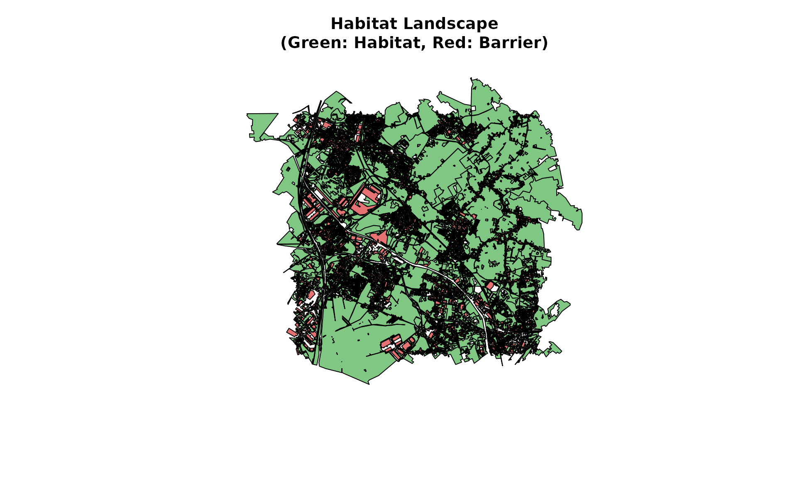
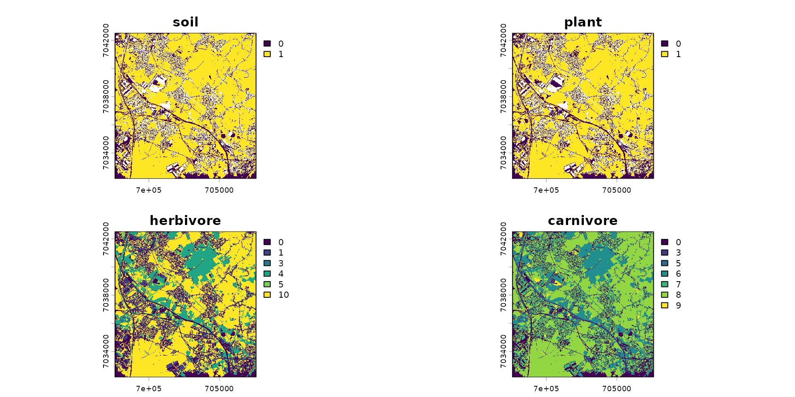
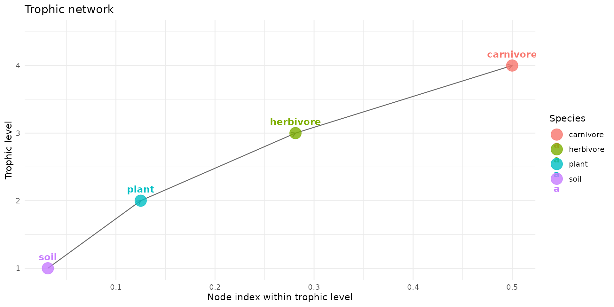
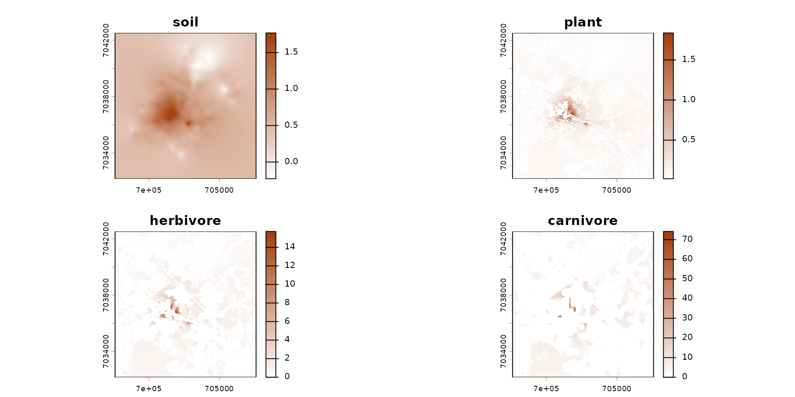
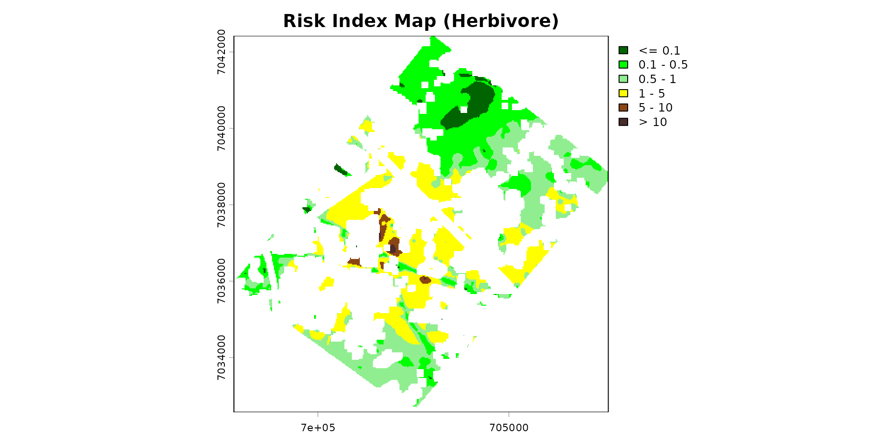

Getting Started: Overview of spacemodR
Getting_Started_EN.RmdWelcome to spacemodR! This Getting Started guide
provides a high-level overview of the package’s capabilities.
The primary goal of spacemodR is to perform
Spatially Explicit Ecological Risk Assessments (ERA).
Rather than calculating a global, single-point risk for a site, we
integrate the actual geography of the landscape to map ecological and
contaminant flows.
To achieve this, we follow a logical, modular pipeline:
- Landscape and Habitats: Define the study area and the species’ ability to inhabit it.
- Trophic Web: Define “who eats whom” (predator-prey relationships).
- The Spacemodel: The core object that merges spatial data with ecological relationships.
- Dispersal: Model animal movement across the landscape.
- Transfer and Exposure: Track the propagation of a contaminant through the food web.
- Risk Mapping: Generate spatial risk indices (e.g., Eco-SSL).
Let’s start by loading the necessary packages:
1. Landscape and Habitats
Everything starts with geography. spacemodR facilitates
the extraction and manipulation of land cover data (like the OCS-GE
database in France) for a given Region of Interest (ROI).
First, we load data from a site in northern France. Here, we use the
provided data (ocsge_metaleurop and
roi_metaleurop) along with the ggplot2 package
for visualization.
# Load a study area (e.g., the Metaleurop site) and its land cover data
data("roi_metaleurop")
data("ocsge_metaleurop")
ggplot() +
theme_minimal() +
geom_sf(data=ocsge_metaleurop, aes(fill=code_cs), color=NA) +
geom_sf(data=roi_metaleurop, fill=NA, color="red", size=1) +
theme(legend.position = "none") +
labs(title="Land Cover in the Region of Interest (ROI)")
From these vector polygons, we define habitats for our species. A habitat is a combination of favorable, unfavorable, or neutral zones. These geometries are then rasterized (converted into regular grids) to prepare them for modeling.
# Example: Loading a background concentration raster for a contaminant (Cadmium)
ground_cd <- load_raster_extdata("ground_concentration_cd_compressed.tif")
# Habitat definition based on OSGE codes (which are in the `ocsge_metaleurop` table)
layer_soil_natural = ocsge_metaleurop$code_cs %in%
c("CS1.2.1","CS2.1.1.1","CS2.1.1.2","CS2.1.1.3", "CS2.1.2","CS2.1.3","CS2.2.1","CS2.2.3")
layer_soil_artificial = ocsge_metaleurop$code_cs %in%
c("CS1.1.1.1", "CS1.1.1.2", "CS1.1.2.1")
layer_plant = ocsge_metaleurop$code_cs %in%
c("CS2.1.1.1", "CS2.1.1.2", "CS2.1.1.3", "CS2.1.3", "CS2.2.1")
habitat_sol = habitat() |>
add_habitat(ocsge_metaleurop[layer_soil_natural,]) |>
add_nohabitat(ocsge_metaleurop[layer_soil_artificial,])
plot(habitat_sol)
habitat_plante = habitat() |>
add_habitat(ocsge_metaleurop[layer_plant,]) |>
add_nohabitat(ocsge_metaleurop[layer_soil_artificial,])Some of these habitat specificities are included in the project. Currently, there are 935 species, including 499 birds, 215 mammals, 136 reptiles, and 85 amphibians.
For example, for the common vole (Microtus arvalis):
microtus_hab <- join_ocsge_species(ocsge_metaleurop, "Microtus_arvalis")
plot_species_habitat(microtus_hab)
… and the greater white-toothed shrew (Crocidura russula):
crocidura_hab <- join_ocsge_species(ocsge_metaleurop, "Crocidura")
plot_species_habitat(crocidura_hab)
To understand the 3 maps in detail, please refer to the Habitat page. Briefly:
- Global weight: This is the carrying capacity (or general attractiveness) of an environment for the species.
- Foraging weight: This is the trophic attractiveness of the environment. An animal does not necessarily feed everywhere it lives.
- Resistance (Movement resistance / Spatial friction): This is the energetic cost or danger associated with crossing this environment. This parameter is used by connectivity and dispersal models (like the Omniscape algorithm discussed later).
# We use the `weight_global` as habitat
habitat_herbivore <- habitat(microtus_hab, habitat=TRUE, weight=microtus_hab$weight_global) |>
add_nohabitat(microtus_hab[microtus_hab$resistance==10,])
habitat_carnivore <- habitat(crocidura_hab, habitat=TRUE, weight=crocidura_hab$weight_global) |>
add_nohabitat(crocidura_hab[crocidura_hab$resistance==10,])At this stage, now that the habitats are defined, we rasterize the
habitats based on a default layer, here cd_ground. This
allows us to have the same landscape grid so we can successfully overlay
all the layers.
# We initialize habitat grids (rasters) for each level
rast_sol <- habitat_raster(ground_cd, habitat_sol)
rast_plant <- habitat_raster(ground_cd, habitat_plante)
rast_herbivor <- habitat_raster(ground_cd, habitat_herbivore)
rast_carnivor <- habitat_raster(ground_cd, habitat_carnivore)
# We create the `raster_stack` of the habitats
stack_habitat <- raster_stack(
raster_list = list(rast_sol, rast_plant, rast_herbivor, rast_carnivor),
names = c("soil", "plant", "herbivore", "carnivore")
)
terra::plot(stack_habitat)
2. The Trophic Web
Once our maps are created, we need to link these layers through
ecological interactions. spacemodR uses a Directed
Acyclic Graph (DAG) to define prey, predators, and the flow of
energy (or contaminants).
# Build the trophic web
trophic_df <- trophic() |>
add_link(from = "soil", to = "plant") |>
add_link(from = "plant", to = "herbivore") |>
add_link(from = "herbivore", to = "carnivore")
# Visualize the trophic links
plot(trophic_df)
3. The Spacemodel: The Core Object
The spacemodel is the heart of the package. It
inherently links the spatial dimension (the raster_stack)
with the ecological dimension (the trophic_df graph).
Any subsequent operation (dispersal, exposure) will use this object to ensure computational consistency.
spcmdl <- spacemodel(stack_habitat, trophic_df)
print(spcmdl)
#> class : SpatRaster
#> size : 415, 401, 4 (nrow, ncol, nlyr)
#> resolution : 24.93766, 24.93976 (x, y)
#> extent : 697602.7, 707602.7, 7032171, 7042521 (xmin, xmax, ymin, ymax)
#> coord. ref. : RGF93 v1 / Lambert-93 (EPSG:2154)
#> source(s) : memory
#> varnames : ground_concentration_cd_compressed
#> ground_concentration_cd_compressed
#> ground_concentration_cd_compressed
#> ground_concentration_cd_compressed
#> names : soil, plant, herbivore, carnivore
#> min values : 0, 0, 0, 0
#> max values : 1, 1, 10, 94. Dispersal and Movement
Animals are not static. An individual’s exposure depends on its
movements (its foraging radius, its dispersal). spacemodR
allows you to simulate these movements, for instance via convolution
kernels or circuit theory (Omniscape).
# Compute dispersal kernels based on a mobility radius (e.g., in pixels)
k_herb <- compute_kernel(radius=50, GSD=25, size_std=0.5)
k_carn <- compute_kernel(radius=150, GSD=25, size_std=0.5)
# Apply dispersal to the spacemodel
spcmdl_dispersal <- spcmdl |>
dispersal("herbivore", method="convolution", method_option=list(kernel=k_herb)) |>
dispersal("carnivore", method="convolution", method_option=list(kernel=k_carn))
# Note: In this example, the soil and plants are static and do not disperse.5. Exposure and Contaminant Transfer
Now that the system is set up, we can “inject” our actual pollutant
concentrations into the soil, and model its bioconcentration and
bioaccumulation up to the top of the food chain using the
transfer() function.
# 1. Assign the actual concentration grid into the "soil" layer
spcmdl_dispersal[["soil"]][] <- ground_cd
# 2. Define the transfer equations (Bioaccumulation / Bioconcentration Factors)
fluxes <- flux(spcmdl_dispersal, default = 1) |>
add_flux("soil", "plant", ~ 10^x / 32) |> # Specific equation for plants
add_flux("soil", "herbivore", 0.5) |> # Simple transfer factor for the herbivore
add_flux("herbivore", "carnivore", 0.8) # Simple transfer factor for the carnivore
# 3. Gather our dispersal kernels for the exposure calculation
kernels <- list(soil = NA, plant = NA, herbivore = k_herb, carnivore = k_carn)
# 4. Compute the global transfer throughout the ecosystem
spcmdl_transfer <- transfer(spcmdl_dispersal, kernels, fluxes)
# Visualize the contamination absorbed by the carnivore
color_transfer <- colorRampPalette(c("white", "#A33D0A"))(255)
terra::plot(spcmdl_transfer, col=color_transfer)
6. Ecological Risk Mapping
The final step of an ERA often involves generating a Risk Index (e.g., Hazard Quotient or Eco-SSL approach). This allows us to map “Hot-Spots” where ecotoxicological reference thresholds are exceeded.
# Define risk classes (from "Safe" to "Very High Risk")
breaks_risk <- c(-Inf, 0.1, 0.5, 1, 5, 10, Inf)
cols_risk <- c(
"darkgreen", # 0 - 0.1 (No Risk)
"green", # 0.1 - 0.5
"lightgreen", # 0.5 - 1 (Threshold limit)
"yellow", # 1 - 5 (Moderate Risk)
"saddlebrown", # 5 - 10 (High Risk)
"#4A2C2A" # > 10 (Severe Risk)
)
# Project the risk onto the Region of Interest
poly_vect <- terra::project(terra::vect(roi_metaleurop), terra::crs(spcmdl_transfer))
rast_crop <- terra::crop(spcmdl_transfer[["herbivore"]], poly_vect)
rast_final <- terra::mask(rast_crop, poly_vect)
terra::plot(rast_final,
breaks = breaks_risk,
col = cols_risk,
main = "Risk Index Map (Herbivore)")
Next Steps
You have just seen the entire spacemodR pipeline in
action! To go further and finely configure each step, we invite you to
consult our specialized guides:
- 🧩️ Habitat Layer: Build complex habitat and resistance maps from vector geometries.
- 🧩️️ Landscape Connectivity: Integrate circuit theory (Omniscape) to model the movement of large mammals
- 🎯️ Tuning Parameters: Explore parameters and their inference (with Bayesian tools).
- 🧪 The Example Zoo: Explore real-world case studies (like the complete Berisp model).